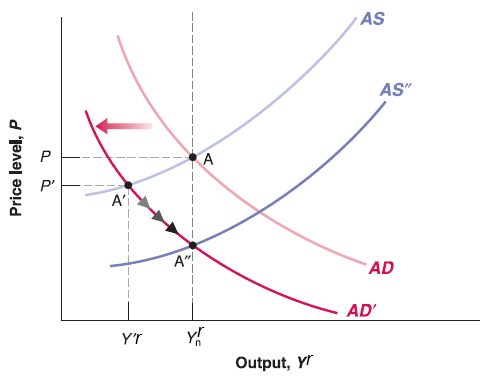

Mingze Huang
2021-08-02

Recall previous lectures:
In short run IS-LM model, we said increase of net taxes or decrease of government spending (deficit reduction) will shift IS curve to the left.
Since Aggregate demand curve derived from IS-LM model, increase of net taxes or decrease of government spending (deficit reduction) will shift AD curve to the left.
Assume the economy starts on medium run equilibrium (labor market equilibrium, goods market equilibrium and financial market equilibrium hold simultaneously, expected price level equals to current price level and keep unchanged (\(P^{e}=P\)), Output level on natural output level (\(Y_{n}^{r}\)):
Now government implements deficit reduction policy (increase of net taxes or decrease of government spending).
In short run, this will push AD curve to the left, goods market and financial market equilibrium deviate labor market equilibrium. Price level goes lower than expected price level (\(P'<P=P^{e}\)), output level lower than natural output level (\(Y'^{r}<Y_{n}^{r}\)).
In medium run, workers will downwardly update expected price level (\(P^{e}\)), this will shift AS curve down. Until the output goes back to natural output level (\(Y_{n}^{r}\)) and expected price level equal to current price level again. So that labor market equilibrium restores. The economy reaches new medium run equilibrium but equilibrium price level has been slashed.
Question: How if government implements deficit expansion (increase of government spending or cut net taxes)?